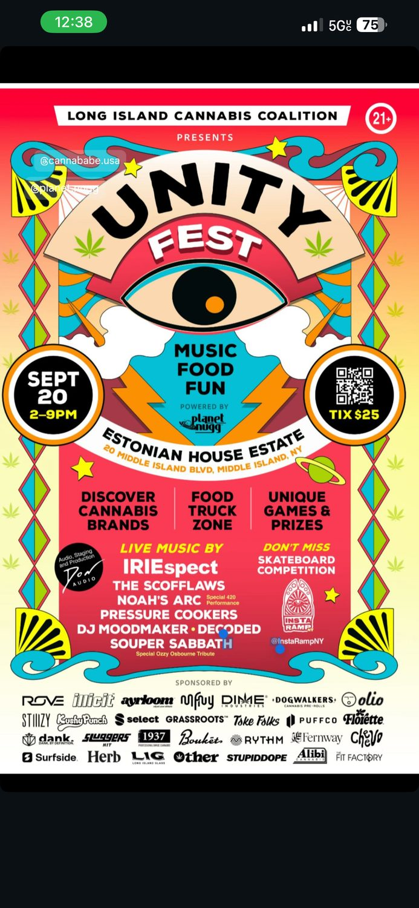

01
Social media lead
Cross-promotion through Purple Alert plus close work with the @thebadgerdash account.

B.S. Interdisciplinary Studies from Spring Hill College — a flexible degree that integrates knowledge across fields into one personalized path. Mine combines Elementary Education and Communications.
Social Media Manager at Zora REI, Inc. and Test Proctor at Randstad / PSEG Long Island.
Roles where communications and education meet — where explaining something clearly, creating engaging content, and helping people learn are the whole job. Open to full-time or freelance, remote, hybrid, or on-site in the NYC metro area.
New York's Educating All Students exam — diverse learners, students with disabilities, English language learners, and inclusive classroom practice. A key step toward NY teacher certification.
Cross-platform marketing for a growing real estate brokerage. 80K+ views in 90 days.
Administers pre-employment & certification exams.
Branded content and customer engagement (hybrid).
Product photography, brand website & Instagram strategy.
B.S. Interdisciplinary Studies — Elementary Education & Communications.
Recognized for outstanding leadership, creativity, and dedication to campus life. Dean's List, Spring 2025.
SGA 5K color run for St. Jude — social media lead, graphics, vendor support.
Standardized testing & academic integrity.
Bartender.
Campus media brand: 1,475 followers · 878,939 impressions · front-page SpringHillian coverage.
Moved to Mobile, AL to build an interdisciplinary degree — education + communications.
Elementary Education — K–5 fieldwork in Baltimore public schools.
Seasonal staff — supervised kids and led group activities.
Four years — graduated 2020 with a Regents Diploma.
My dad's craft store. Helped customers with craft, jewelry & DIY materials and managed inventory until it closed in early 2020.
B.S. Interdisciplinary Studies — Communications & Elementary Education. Media literacy, digital content, and instructional strategy in one adaptable skill set.
Cross-platform marketing for a growing real estate brokerage — graphics, videos, and recruitment campaigns. Collaborates with influencers to increase brand visibility, attract agents, and create trend-driven content (Garden City, NY).
Administers and monitors pre-employment and certification exams — verifying identification, giving clear instructions, reporting irregularities, and maintaining accurate records (Bethpage, NY).
Supports sales and customer engagement through in-person and online outreach; creates branded content and visuals that grew the brand's online presence (hybrid — Detroit, MI / NY branch).
Captures and edits product photography for handcrafted jewelry, improving listing engagement; built and maintains the brand website and Instagram with a promotion-focused content strategy (hybrid — Huntington, NY).
Oversaw standardized testing procedures and enforced academic integrity; assisted with setup and breakdown of exam sessions (Brentwood, NY).
Supervised children and led group activities during community events; strengthened youth communication and safety-awareness skills (Garden City, NY).
Maintained a clean, organized bar area within health & safety standards; managed cash and credit transactions with accuracy and accountability (Mobile, AL).
Provided knowledgeable help to customers selecting craft, jewelry, and DIY materials; maintained store organization and helped manage inventory (West Hempstead, NY).
Founded and managed a student-run Instagram account (1,000+ followers) promoting unity and campus events; earned recognition in the school newspaper.
Concentrations: Elementary Education & Communications (Mobile, AL).
Baltimore, MD.
Garden City, NY.
Recognized for outstanding leadership, creativity, and dedication to campus life — selected by the Center for Student Involvement for embodying the values and spirit of the SHC community.
Education (all with student-teaching fieldwork): Teaching Methods & Literacy · Art for Children · Survey of Exceptionality · Multicultural Teaching · Oral & Written Language
Communications: Strategic Writing · Media Law · Professional Ethics · Scriptwriting for Film & TV · Digital Tools · Crisis Communications
Communications, education, and personal projects — pick a category to explore.
Breaking down words we don't understand.
Students use syllables, prefixes, suffixes, and root words to segment, blend, and manipulate sounds in multisyllabic words — building a repeatable strategy for decoding unfamiliar words instead of guessing or skipping them.
I built the lesson on the I Do / We Do / You Do gradual-release model, so students moved from watching to guided practice to working on their own.
I displayed unbelievable and broke it into morphemes: prefix un- ("not"), root believe, suffix -able ("able to") — then blended the parts back and explained the meaning: "not able to believe."
As a class we worked through reconstruction and misunderstanding using sentence strips, asking how a prefix like "re-" changes meaning in a real sentence.
Small groups got five multisyllabic words to break into syllables, morphemes, and phonemes, then used each in a sentence that showed its meaning.
The morpheme reference chart students worked from — the heart of the strategy:
| Word | Prefix | Root | Suffix | Meaning |
|---|---|---|---|---|
| Unbelievable | un- (not) | believe | -able | Not able to believe |
| Reconstruction | re- (again) | construct | -ion | Act of building again |
| Misunderstanding | mis- (wrong) | understand | -ing | Understanding wrongly |
| Inconceivable | in- (not) | conceive | -able | Not able to imagine |
Students engaged strongly with the hands-on segmentation, but my reflection flagged pacing — independent practice needed a few more minutes. So I built an adapted, low-materials version that swaps physical word cards for a printed worksheet, keeping the same structure with less setup. Reflecting and revising the lesson afterward is the part I'm proudest of.
Teaching kids to figure out a word from the story around it — figuring things out based on what's around us.
Students use context clues to determine the meaning of three challenging words from Charlotte's Web — radiant, humbly, and summon — chosen deliberately for their range of difficulty so the lesson could differentiate across readers.
I wrote the three words on the board and asked students what they thought each meant — activating curiosity before we opened the book.
We read the passage aloud together, pausing at each word. For "radiant," I asked what Charlotte was feeling in the scene and how we could tell — pointing students to the surrounding text for evidence.
Students completed a worksheet: write the word, infer its meaning from context, then write their own definition. We reviewed answers as a class.
When we analyzed "radiant," students connected it to Charlotte's mood in the scene rather than reaching for a memorized definition — exactly the transfer the lesson was designed to produce. The interactive discussion was the clear strength.
Next time I'd add a quick think-pair-share before the whole-class discussion, so quieter students build confidence with a partner before sharing out. A glowing-web visual supported visual learners and I'd lean on that kind of scaffold even more.
Connecting a character to real history.
Students analyze how Ponyboy Curtis demonstrates resilience through his relationships and challenges — then connect that theme to real historical figures, bridging English Language Arts and Social Studies in a single interdisciplinary lesson.
I opened with an image of resilience — a historical figure or athlete overcoming a challenge — and asked students about a time they had to stay calm under pressure.
We read the church-fire rescue scene together, pausing for guided questions, while students filled in a character map: the challenge, the traits Ponyboy shows, and the outcome.
A group discussion compared Ponyboy's resilience to real figures like Rosa Parks or Jackie Robinson, then students wrote a short reflection applying resilience to their own lives.
The organizer that anchored the analysis:
| Challenge | Traits demonstrated | Outcome |
|---|---|---|
| The church-fire rescue | Bravery, selflessness | Ponyboy grows through the experience, deepening his sense of purpose |
The guided reading and character map kept students engaged with the text. Some needed more scaffolding for the reflective writing — so my takeaway was to add sentence starters and a modeled example next time. This single-day lesson later became the seed for one book in my full Literature Circles unit.
3 books, 5 student roles, 1 theme.
This is a full four-week unit built around a single theme — resilience — explored across three trade books. Students meet in small groups twice a week, each taking a rotating role, then connect the theme back to their own lives. It's the largest instructional design project in my portfolio, and it uses my Outsiders lesson as one piece of a bigger structure.
| Book | Author | Resilience angle |
|---|---|---|
| The Hunger Games | Suzanne Collins | Survival, courage & strategy in a dystopian world |
| The Outsiders | S.E. Hinton | Facing prejudice; family & self-discovery |
| Charlotte's Web | E.B. White | Friendship & perseverance |
Each group member takes a role with its own scaffolded worksheet, and roles rotate so everyone practices every skill:
Struggling readers are paired with peers for support, visual aids reinforce key concepts, and sentence starters scaffold the reflective writing. A Character Resilience Map and Reflection Journal run through the whole unit, and a role-specific rubric makes participation measurable.
Writing a full Individualized Education Program — goals, services, and a real intervention plan.
A complete Individualized Education Program written end-to-end for a case-study student — a 5th grader presenting with Conduct Disorder. Not just a list of accommodations, but the full document: present levels of performance, measurable annual goals, related services, and a behavior intervention plan. It's the clearest evidence I have of inclusive planning in writing.
Every goal is written to be observed and tracked — the standard IEP requires:
The IEP pairs classroom accommodations — preferential seating, structured routines, break cards, behavior contracts, daily check-ins — with a full Behavior Intervention Plan.
Identifies the target behaviors and their triggers (changes in routine, perceived unfairness, academic frustration), lays out proactive strategies and de-escalation interventions, and includes a crisis plan with a restorative follow-up — so the response is planned in advance, not improvised.
My mom is a special-education home-instruction teacher, so inclusive planning isn't abstract to me. Writing a complete IEP — goals, services, and intervention plan together — is where my belief that every learner deserves a real plan shows up on paper.
Two siblings, one buried device, and a fall through time — a TV pilot I wrote from scratch.
Two siblings dig up a strange device on the beach behind their house and are flung across time — from a 1920s carnival to the age of dinosaurs — racing to find their way home before their parents ever notice they're gone. Chrona (14) is serious and always has a plan; Kairos (11) is carefree and chases crabs instead of treasure.
Fade in:
Ext. Eureka Point Beach — Sunrise
Waves crash against the shore. The sun rises over the small coastal town of Eureka Point, casting a golden glow on the dunes.
CHRONA (14, serious, focused) kneels in the sand with a metal detector, scanning methodically. Beside her, KAIROS (11, carefree, impulsive) chases a crab.
Chrona
Kairos, could you please focus for five minutes?
Kairos
I am focused. On not dying of boredom.
The metal detector BEEPS. Kairos darts over, digging, and pulls out a rusted metal object.
Kairos
An ancient artifact! Or... a rusty can.
His hand brushes something else buried — a sleek metallic device covered in strange symbols, totally out of place. He presses a button. A faint HUM begins, the air SHIMMERS, and the siblings DISAPPEAR.
Ext. 1920s Eureka Point — Night
The siblings land in the middle of a bustling carnival — bright lights, jazzy music, colorful tents.
Chrona
(whispering)
We're in the past. And we need to get back. Now.
The script leans on voice contrast — Chrona's focus against Kairos's impulsiveness — to carry exposition through banter instead of narration. It follows a classic three-act structure spread across three time periods, and plants a mystery hook in the final image: a stranger, Ms. Calypso, watching from her window holding a device just like theirs — a thread meant to pull a whole season forward.
A media-ethics paper I'm proud of — using the Potter Box to dissect a real corporate scandal.
In January 2018, H&M faced international backlash for featuring a young Black boy modeling a hoodie reading "Coolest Monkey in the Jungle." My paper uses the Potter Box model of moral reasoning to trace how the brand failed its ethical obligations — and why the case is now taught as a cautionary tale about representation, corporate accountability, and children in media.
"While H&M claimed no malicious intent, the ad was widely criticized for its racial insensitivity and disregard for the historical use of 'monkey' as a racial slur. The incident underscores how much context matters in advertising — and the harm caused when stereotypes are perpetuated, even unintentionally."
The paper works through all four quadrants of the framework:
Because the model is a child — a protected class in media ethics — the paper argues that PR responsibility isn't about managing a crisis after it happens, but preventing it through more inclusive review before a campaign ever airs. That's a lesson I carry into the real brand work I do now: representation matters, and ethics aren't optional.
Building a real estate brand's voice — one reel at a time.
At Zora REI I do cross-platform marketing for a real estate brokerage that's actively growing every day — which means the role isn't just "post content," it's building the systems and creative that support growth on several fronts at once.
Day to day that includes designing graphics for listings and brand campaigns, producing short-form video for Instagram and TikTok, and building out recruitment campaigns aimed at bringing new agents onto the team — real estate marketing has to sell the brokerage to agents as much as it sells homes to buyers. I also manage paid social — boosting top-performing posts and running targeted ad campaigns — and lead influencer collaborations to put the brand in front of new audiences and keep the content feeling current rather than corporate.
It's the role where every skill from the rest of this portfolio shows up at once: the visual instincts from Purple Alert, the brand-voice consistency from Sugared, and the comfort working inside a fast-moving, growth-focused company.
Source: Instagram Insights, 90-day window (Apr 28–Jul 26).
Beyond organic content, I run paid ad campaigns to extend the reach of top-performing posts — most recently a recruitment ad that pulled 15,506 views, 5,343 reach, and 97 link clicks from a single boosted post. Knowing which organic post is worth putting budget behind is its own skill — the strongest hiring post this quarter earned 16.5K total views once boosted, more than 8× its organic reach.
A few examples of the short-form video I've shot, edited, and published across the brand's Instagram and TikTok — listings, brand moments, and recruitment content.
Reels load from Instagram — they'll appear when the site is live online. See more on Instagram ↗
My aunt's Etsy shop — and my crash course in running one.
NaturalRockShop is my aunt's Etsy shop — handcrafted silver and gold gemstone jewelry with a following built over 13 years on the platform: 17,300+ completed sales, a 4.9-star rating across more than 6,600 reviews, and nearly 1,600 items in the shop. I stepped in to help modernize and maintain the brand's presence: capturing and editing macro product photography that shows off each stone's texture and detail, styling shoots to drive listing engagement, and building out the shop's own website alongside its Instagram.
Beyond photography, I handle order fulfillment and shipping and respond directly to customer questions — the operational side that keeps a 17,000+ sale shop running smoothly day to day. I also develop the content strategy behind how each new piece gets introduced and promoted — deciding what goes on Instagram versus the Etsy listings themselves, and how to keep a shop with over a decade of history feeling current without losing what customers already love about it.
It's a different kind of challenge than a brand built from scratch: the trust and reputation were already there, and my job was to give it a stronger visual identity and smoother day-to-day operations to match.
Source: NaturalRockShop's live Etsy storefront.


Showing up in person, on brand, at every event.
Cannababes is a brand ambassador role in the cannabis wellness space — a trained, trusted presence in person, not a desk job. Onboarding included completing official training programs for brands like Jeeter and Planet Nugg (a wellness-focused dispensary in Farmingdale, NY), and ongoing work involves regularly submitting content (photos and check-ins) through each brand's internal channels for approval and posting, keeping everything compliant with how the brand needs to be represented.
The best part of the role is the in-person events — Unity Fest, the Long Island Cannabis Coalition's festival, was a standout, where I represented Planet Nugg directly with attendees alongside their team: engaging with customers, answering questions, and putting a face to the brand rather than just a feed. I've also worked in-store for Jeeter, including their "Mile High" activation. That in-person energy is what the role is really about — sales and customer engagement happen face to face first, with content supporting it rather than replacing it.



A full-day festival — music, food, and dozens of cannabis brands — powered by Planet Nugg. I worked the Planet Nugg booth alongside their team, engaging attendees throughout the day in a fully licensed, 21+ event setting.
A real hiring challenge, delivered in under 48 hours.
As part of the interview process for a content role at Sugared Beauty Bar, I was given a real-world creative challenge: design a full month of social content for a beauty and self-care brand, on a tight turnaround. I delivered 12 posts and 2 full carousels — consistent templates, service-education content, promotional posts, and a soft, on-brand voice — concept, design, and copy all mine, completed in under 48 hours.
It's one of the clearest examples I have of working under real evaluation conditions rather than a self-set deadline — the kind of test that shows what I can actually produce when it counts, not just what I choose to make on my own time.


A campus account for Badgers, by Badgers — that the whole school ended up following.
I started Purple Alert because Spring Hill needed a place that actually felt like us — somewhere students could laugh at the same inside jokes, keep up with what was happening around campus, and feel part of one community.
What began as a fun, unofficial meme page grew into something the whole campus paid attention to: news, events, weather, shout-outs, and the occasional purple badger. It was for Badgers, by Badgers — and it caught on with students, alumni, families, and even the wider Mobile community.
On April 25, 2024, the college's student newspaper ran a front-page story on Purple Alert — a meme page that had become a genuine campus institution. I sat down with them to share how it started and what it grew into.
A front-page feature by reporter Maddie Bouck on how the account started, grew past 1,000 followers, and became a campus institution. Tap to read →
A sampling of what went out — memes, campus moments, event promo, and Purp. Drop real screenshots into this grid, or see the live feed anytime.
A purple badger in a tracksuit and gold chain who became the account's running bit — showing up for holidays, finals, game days, and the Badger Dash. A whole cast of AI-made Purp images the campus started looking forward to.
A 5K color run for St. Jude on the Avenue of the Oaks. I led the social media side and supported the event with graphics, vendor outreach, and promotion.
Cross-promotion through Purple Alert plus close work with the @thebadgerdash account.
Flyers, story graphics, t-shirt design, and Purp-branded vendor tie-ins (CJ's Southern Swigs, Threaded Oyster).
Outreach and promotion supporting the SGA + Tri Delta organizing team.
When I passed Purple Alert to the next class of students, it had reached well over a thousand followers at a school of around 900 — and it hasn't slowed down since. The account is still active today, which to me is the real win: I didn't build a personality, I built something the campus wanted to keep.
Founded 2022 as @shcpurplealert · renamed @purp_alert · 1,000+ followers and growing when I handed it off · still posting today.
Here's a closer look at where I've been, what I care about, and everything I bring to the table beyond the résumé.
I'm from Long Island, New York, and graduated from Garden City High School in 2020. Before that, I spent years behind the counter of my dad's craft store, Ace Handicraft, helping families pick out craft and jewelry supplies — my first real experience teaching product usage and fostering creativity in a community space.
College took me five years. I started at Loyola University Maryland in fall 2020 — fully online, straight into COVID — then moved to a hybrid format that spring, splitting time between Baltimore classrooms and a screen. After two years there, I transferred to Spring Hill College in Mobile, Alabama, where I'd stay for three years and where everything really clicked.
At Spring Hill I couldn't pick just one lane, so I built my own: a customized interdisciplinary degree combining Elementary Education and Communications. In the classroom I was student-teaching every semester but my first year; online I was running Purple Alert, the campus account I founded that grew into something the whole school followed. Somewhere between lesson plans and memes, I realized they're the same skill — make people care, then make it make sense.
Creativity is the strength I bring into everything — I love designing lessons and finding unique ways to engage learners, especially through technology. My mom is a special education home instruction teacher, and I think that's part of why accessibility means so much to me: I see technology as a bridge to independence, and I want to help young learners realize their full potential.
Right now I'm back in New York doing social media and creative work for real brands, chasing photography and music on the side, and looking for the place where communication and education actually meet.
Working near my hometown as a computer lab teacher, art teacher, or a specialist who helps educators and students use AI and emerging tech — especially students with disabilities. Technology as a bridge to accessibility and independence.


"Spirit of Spring Hill" — recognized for leadership, creativity, and dedication to campus life (2025).
View certificate →Purple Alert featured on the front page of The SpringHillian (April 2024).
Read the feature →Spring 2025 — Spring Hill College.
Passed New York's teacher-certification exam for educating all students (2026).
Helped launch a 5K color run for St. Jude as social media lead.
Grew a campus account bigger than the campus — and still growing after handoff.
I'm usually behind a camera, working on music, designing something, or writing. I love a good creative challenge, strong coffee, and any excuse to bring people together. A Personal & Creative section is on the way to show more of it.
Open to communications, education, and everything where they overlap — full-time or freelance. The fastest ways to reach me are all right here.
"Teaching the world to pay attention — starting with whoever's reading this."